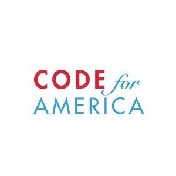

Résumé
Ainsley Wagoner - Visual Interaction Designer
Recent Experience
 Yo
2015 - present
Yo
2015 - present
Product Design, Visual Interaction, User Experience
San Francisco, CA
Product Design for Yo mobile app - a communication app which made it to #1 in the App store and has over 300 million downloads.
HTML CSS Adobe Illustrator Sketch WebFlow User Research User Testing
Contract Designer
2014 - 2015
UX, Visual Interaction and Communication Design
San Francisco, CA
Clients included IDEO.org, Heavybit Industries, and Camperoo. I created pixel-perfect interaction mock-ups, visual assets (custom icons and background textures,) style guides, and worked with front-end engineers on implementation of the design.
HTML CSS Adobe Illustrator Sketch WebFlow User Research User Testing

Code for America
2014
Visual, UX and Interaction Designer, Non-Profit
San Francisco, CA
I partnered with the government of Puerto Rico to research and develop PrimerPeso.com - a tool that matches small business owners with available incentives. I conducted problem space research, user testing, and product development from start to finish. I designed the look and feel of the application from the product’s front-end implementation to the marketing materials.
HTML CSS Adobe Illustrator Sketch WebFlow User Research User Testing
CirrusMio, Inc.
2012-2014
User Experience and Visual Design, Startup
Lexington, KY
I created products for non-profits to receive donations and manage volunteers. I created user-interaction flows, art assets, worked on implementation, and marketing materials. I developed the branding and worked with the front-end team to prototype and develop CivicRush.com and CivChoice.com.
HTML CSS Adobe Illustrator